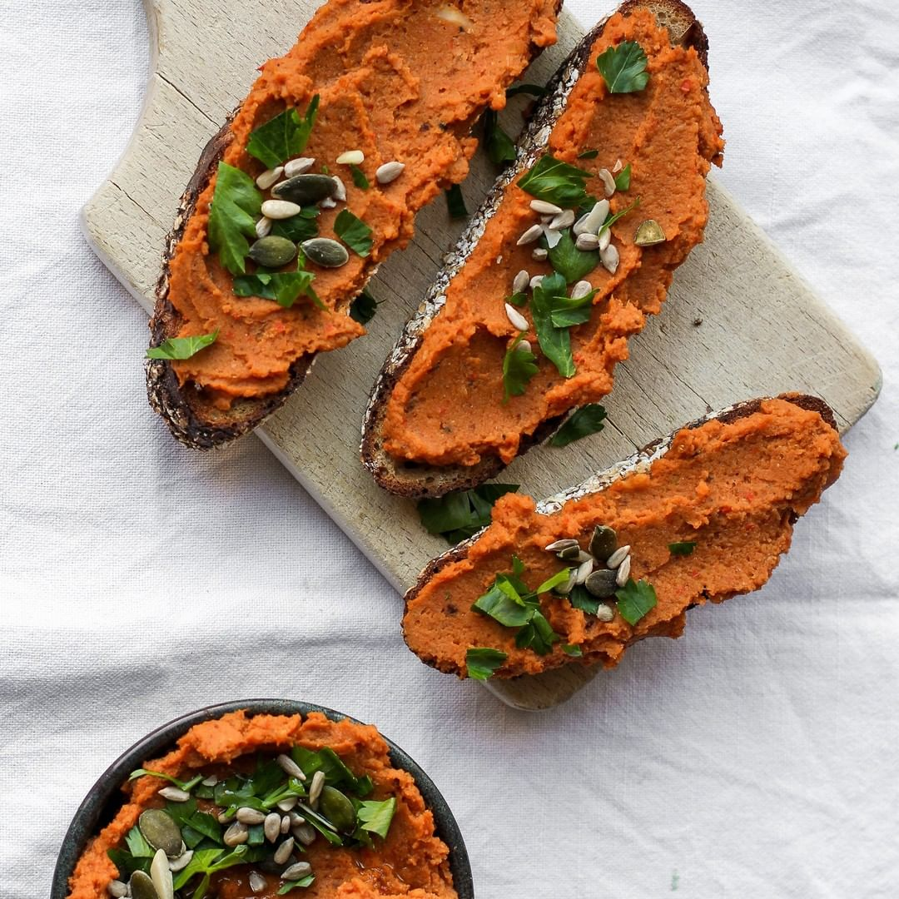

Hovädzie mäso podľa @jemezdravo.eu — Normy Jedál
Pripravujete rodinné posedenie a neviete, čo pripraviť pre hostí? Čo tak skúsiť recept na zmes na hrianky. Určite si pochutnajú.
🥪 Zmes na hrianky 🥪
Príprava: 10 minút
Tepelná úprava: 45 minúty
Obtiažnosť: stredná
Počet porcií: 8 porcií
Nutričné informácie na 1 porciu: 213 kcal 11 g bielkovín 23 g sacharidov 9 g tukov
INGREDIENCIE
8 plátkov slnečnicového chleba
300 g mletého hovädzieho mäsa
1 stredne veľká biela cibuľa
2 lyžice olivového oleja
2 mrkvy
1 koreň petržlenu
2 papriky
1 pór
250 g mäsitých paradajok
2 strúčiky cesnaku
soľ
čierne korenie
POSTUP PRÍPRAVY
1. Rúru predhrejeme na 190 °C. Hovädzie mäso orestujeme na cibuľke a olivovom oleji v hlbšej panvici. Do panvice pridáme očistenú mrkvu, petržlen, papriku, pór a paradajky a podlejeme 200 ml vody.
2. Panvicu dáme do rúry a pečieme pod pokrievkou pri teplote 180 – 190 °C cca 45
minút.
3. Zmes necháme vychladnúť a rozmixujeme dohladka. Nakoniec dochutíme soľou a čiernym korením a pridáme prelisované strúčiky cesnaku.
#zmes #hrianky #paradajky #paradajka #hovadziemaso #maso #hovadzie #natierka #nátierka #desiata #obed #precelurodinu